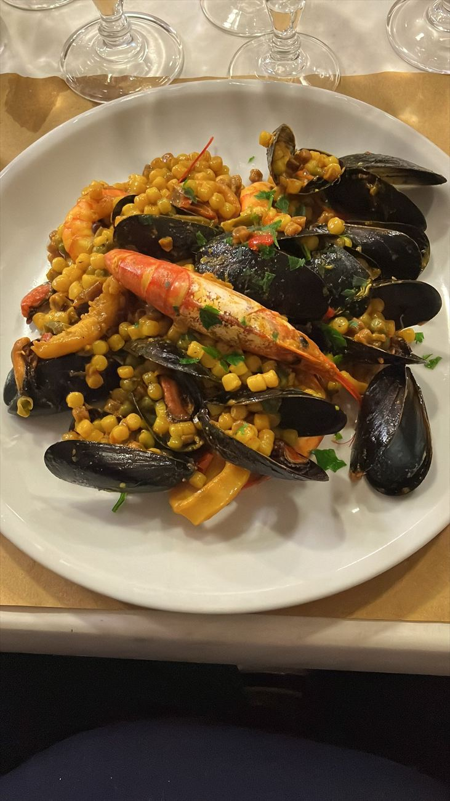
Alghero
Paella all'algherese
Con la fregola al posto del riso, cozze, vongole e gamberoni.
Benvenuti nella piccola Sardegna di Chieri.
Cucina sarda e di mare, a pranzo dal lunedì al sabato: fregola, paella all'algherese, crostacei e pesce del giorno. Per finire, seadas e un bicchierino di mirto.
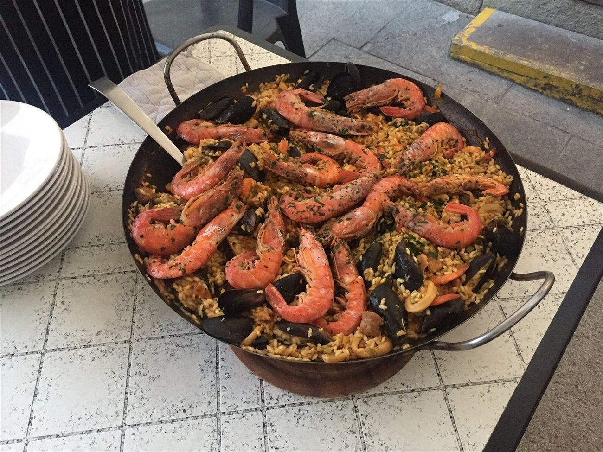

Con la fregola al posto del riso, cozze, vongole e gamberoni.
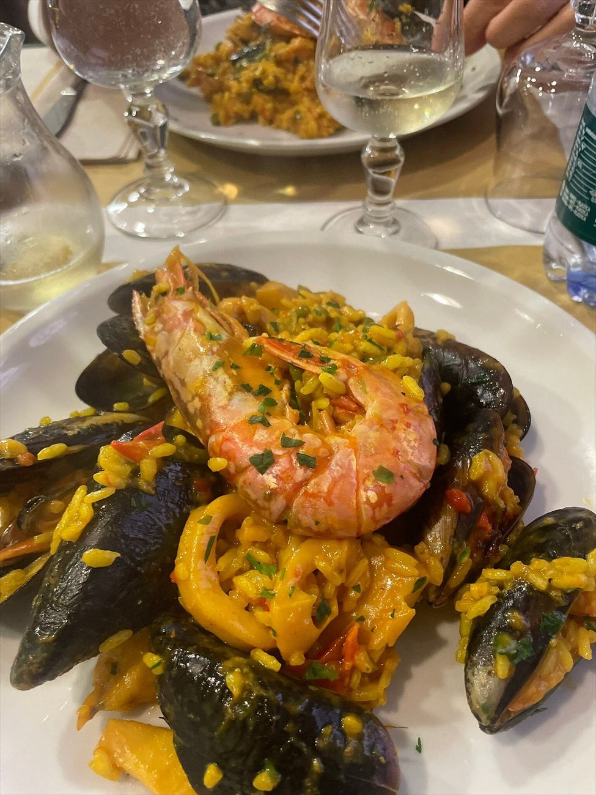
La pasta di semola tostata, cotta nel sugo di mare.
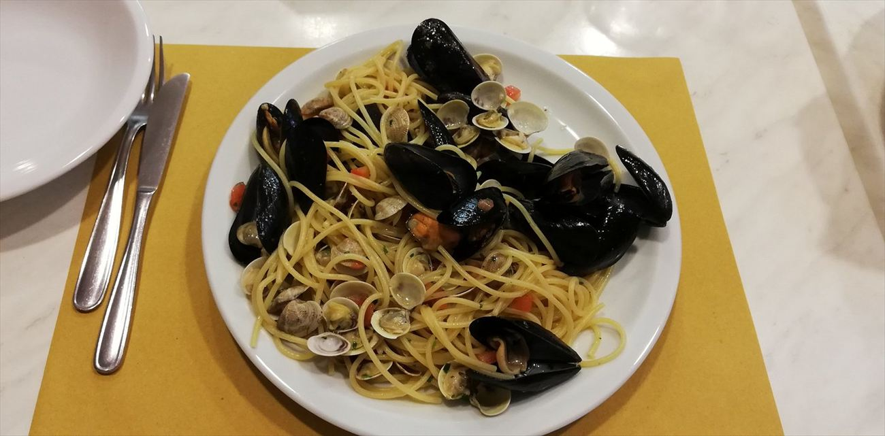
Il classico, fatto come si deve.
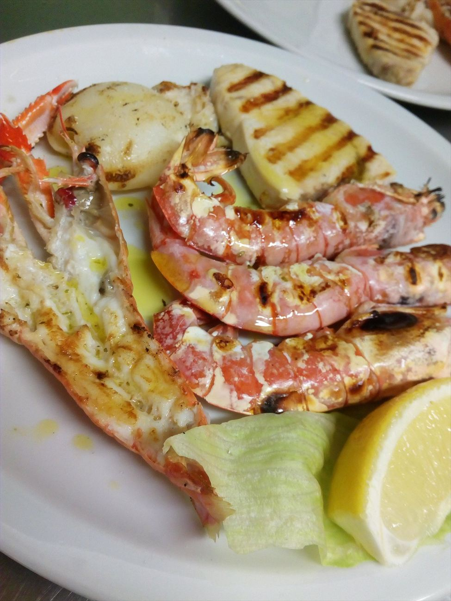
Gamberoni, calamari e quello che offre il mercato.
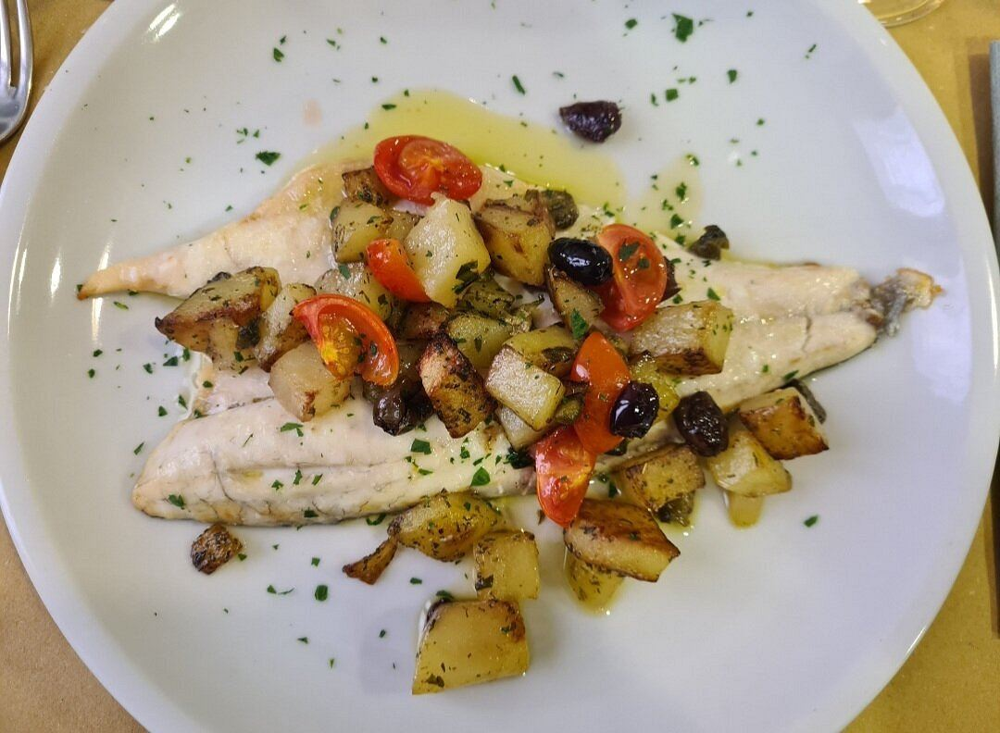
Filetto di branzino, carciofi e olive.
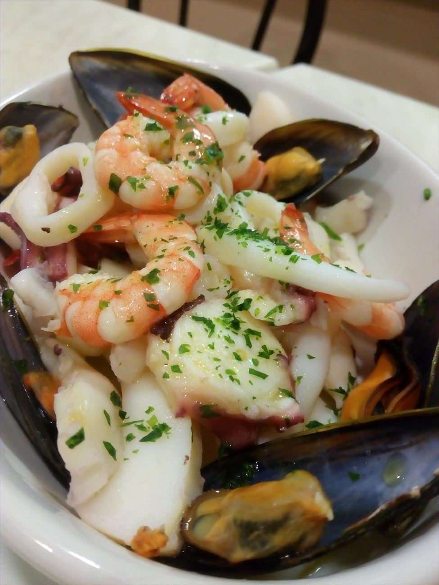
Cozze, gamberi e calamari, appena scottati.
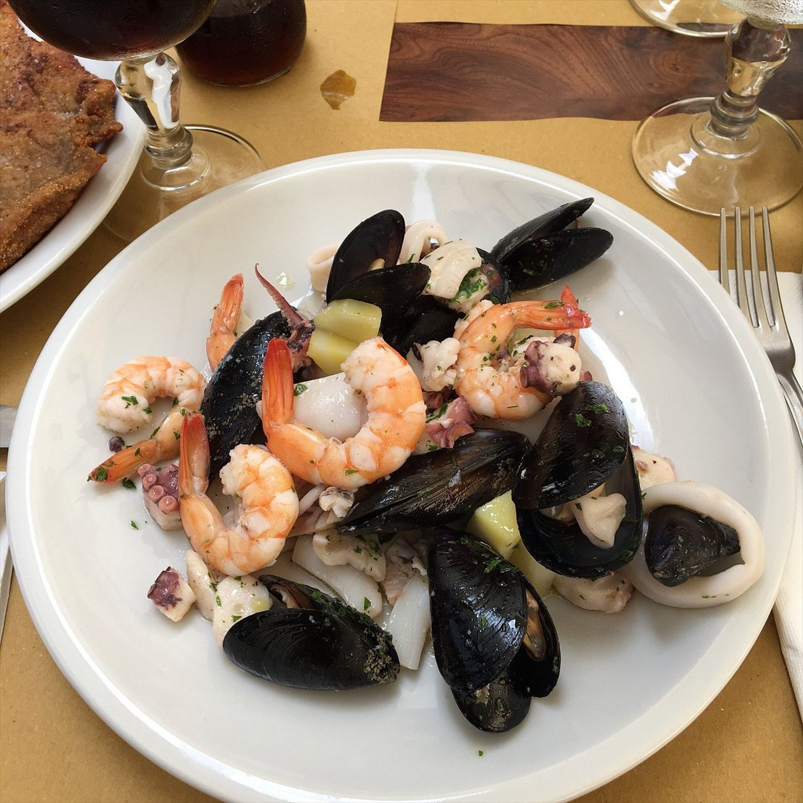
Il sauté di cozze e gamberi, col pane per la scarpetta.
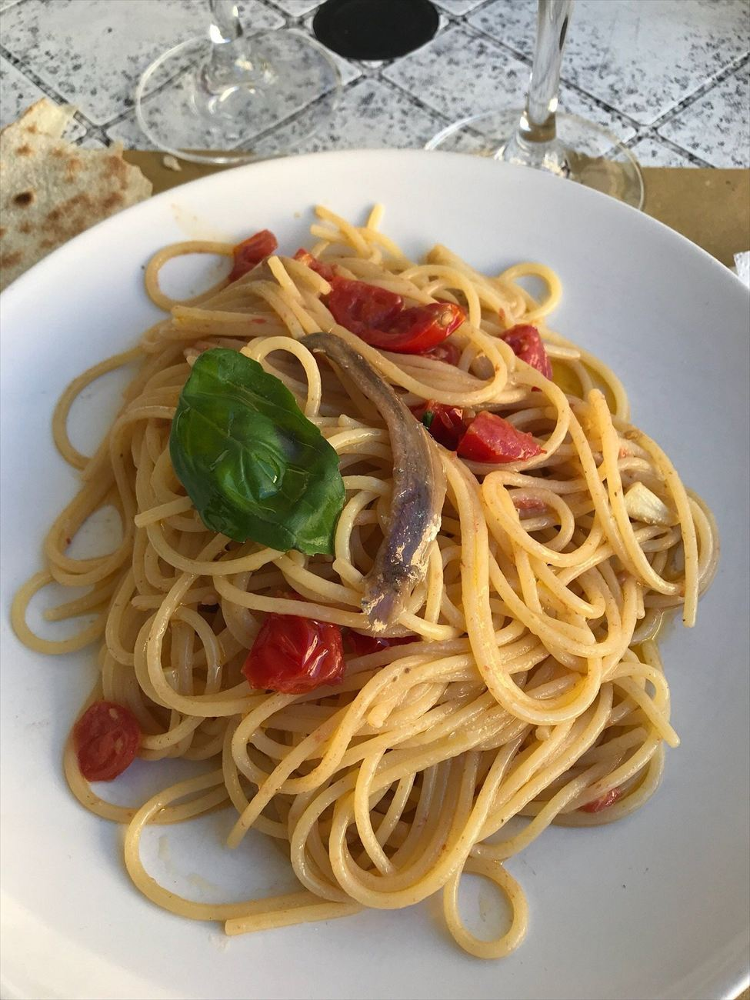
Per chi il pesce non lo mangia: c'è sempre anche la terra.
In trattoria vendiamo anche prodotti sardi di qualità. Chiedete in sala cosa è arrivato dall'isola.
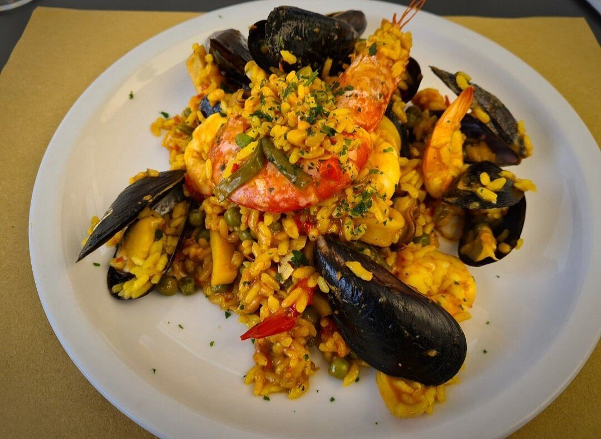
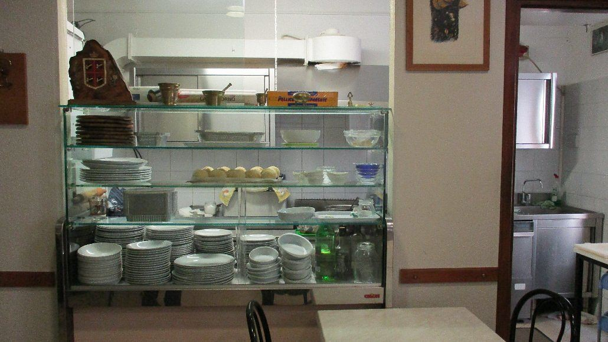
A kent'annos!
Il brindisi sardo: cent'anni di salute, a voi e a chi vi sta accanto.
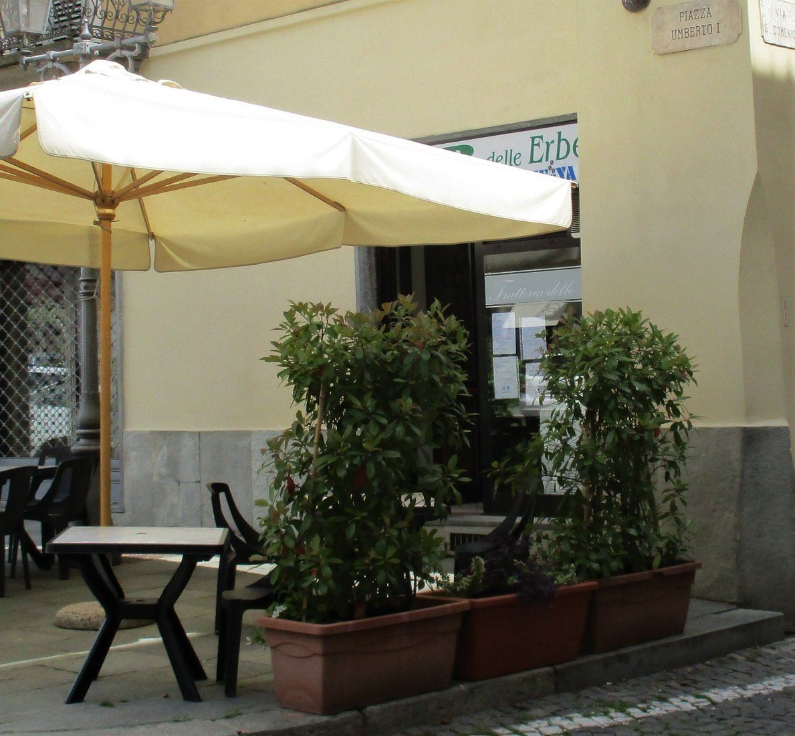
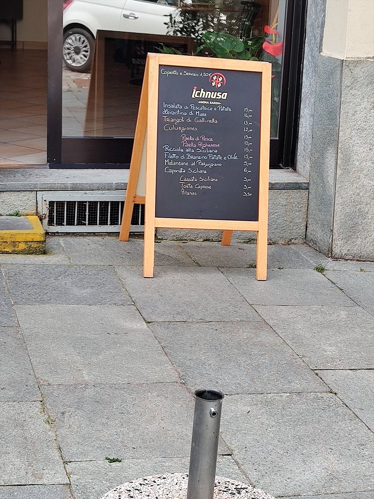
10023 Chieri (TO) · pochi tavoli, meglio prenotare.
Il menù cambia ogni giorno: lo trovate sulla lavagna fuori.